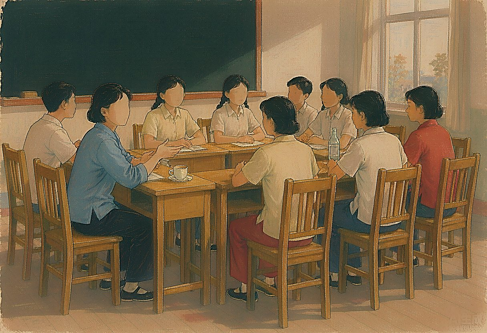

1976年，我在崇明东风农场场部学校中学组教书。那时“文革”尚未结束，教育界乱成一团，农村的孩子虽然淳朴，可“读书无用”的念头像野草一样疯长。我们这些知青老师，心里都憋着一股劲儿，总想把学生教好，可真正站上讲台，却像没头的苍蝇，手足无措。每周的政治学习，大家也都提不起劲，翻来覆去，翻不出什么新意。
有一天，一位同事偶然说起，他有个亲戚在杨浦中学当校工，听人讲，学校里有位于漪老师，教书特别有办法，带的班级井井有条，学生都服她。我们一听，眼睛顿时亮了——何不去取取经？既能让学生们受益，也能给政治学习添点活气。
于是，我们一行人顶着七月的烈日，从崇明辗转来到上海杨浦中学。那天酷热难耐，教室里没有风扇，只用课桌围成一个长方形的圈。于漪老师就坐在长边的中央，穿着一件洗得发白的蓝布衫，见我们进来，笑着招手：“来，坐近点，别拘着。”她的声音不高，却像清泉流过干渴的心田，让人不自觉地安静下来。
于漪老师一开口，就让我们耳目一新。她说：“教书啊，实际上是教人，得‘目中有人’。”这话在当时听来，格外新鲜。因为“目中有人”这个词，平日多用来形容待人接物的礼数，谁曾想，竟被她用在了教育上。她接着说，1975年，她接手了全校纪律最差的一个年级——11个班，学生普遍厌学，上课打闹、逃课、偷东西，甚至打架都成了常事。她不仅教语文，还当班主任，既要传知识，也得管思想、带班风。
她讲起一个个学生的故事，语气平静，却字字入心。有个学生痴迷装半导体收音机，却没心思学习。于漪老师知道后，没批评他，反而自己掏钱买了些零件，请他到家里一起组装。一边焊电路，一边聊天，慢慢地，学生渐渐敞开了心扉，也开始爱学习了。她发现这孩子动手能力强，逻辑清晰，便鼓励他参加学校的科技竞赛。另一个学生口吃严重，一开口就脸红。她便让他先在小组里读课文，再慢慢扩大到全班。每次他结巴时，她都不打断，只是轻轻点头。她说：“每个人的声音都是独特的，你的表达，比完美更重要。”时间久了，那孩子竟敢在全校朗诵会上登台了，最终在全校演讲比赛中获奖。
她说，这就是她的办法——“一把钥匙开一把锁”。每个孩子都不同，不能用一把尺子量所有人。
让我们动容的是，她从不放弃任何一个被贴上“差生”标签的孩子。她坚信，每个孩子心里都有向善、向上的火苗，就看老师能不能点燃。班上有几个调皮捣蛋的学生，最爱给同学起外号，起得还特别传神。别人嫌他们惹事，她却笑着说：“这些孩子书念得不好，可观察力真强，起的外号，活灵活现。”说着，她用手轻轻捂住嘴，咯咯地笑了起来，眼里闪着光，那不是讽刺，是疼爱，是欣赏。在她眼里，那些被别人嫌弃的“毛病”，竟也藏着闪光的天赋。
那一刻，我们才真正明白她所说的“目中有人”——看见每一个活生生的人，看见他们的不同，看见他们的难处，也看见他们心底的光。她不居高临下，不空谈道理，而是蹲下来，走进学生的生命里，用爱去理解，用智慧去引导。
后来，1977年高考恢复，她带的那个年级，有两个班实现了百分之百录取，轰动了整个上海教育界。人们开始谈论她，说她“教文育人”，说她“带班有方”。可那天的我们，不知道这些，也根本没想过她日后会成为“改革先锋”、成为“人民教育家”。在我们眼里，她只是一个穿着朴素、说话温和、眼神明亮的普通中学老师。
“文革”结束后，我成了恢复高考后的第一届大学生，分配到杨浦区市东中学教书，后又调到杨浦区教育学院。于漪老师也在杨浦，渐渐地，她的名字被越来越多的人提起，荣誉也接踵而来。我参加过不少“向于漪老师学习”的活动，听过她更多的讲座，读过她更多的文章。可无论后来她站在多高的讲台上，我始终记得第一次见她时的样子——在那间闷热的教室里，面对我们这群毫无经验、满脸迷茫的年轻教师，她没有一点架子，也没有半句套话，只是真诚地分享着自己的经历，像一位老教师在灯下与晚辈谈心。
（本文刊登于2026.3.5《上海老年报》）